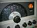
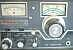
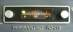
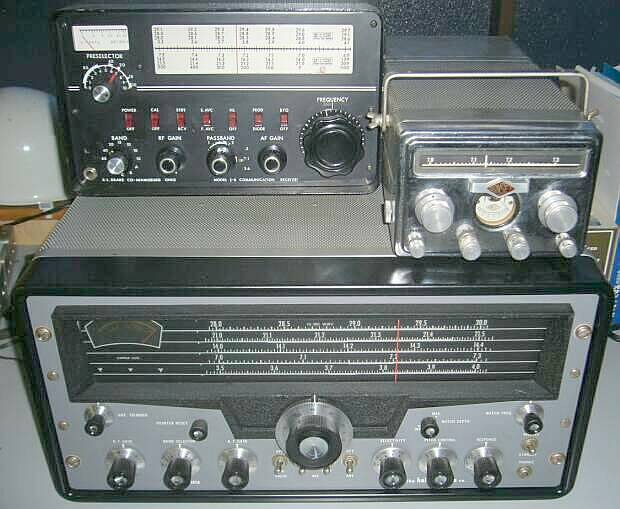
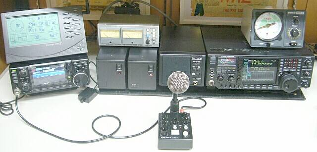
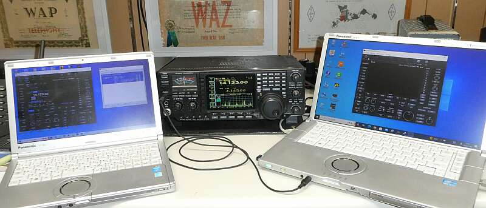
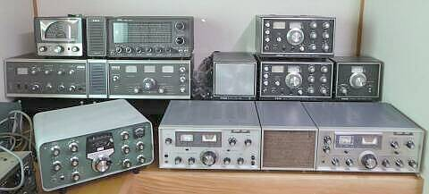

|
 |
 |
|
| 青電舎：担当 堀 Ｍａｉｌは seiden_atmark_po.harenet.ne.jp （お手数ですが、_atmark_を @ に直して下さい） お電話では、（０８６）２７５－５０００ ＦＡＸは、０１２０－５４５０００ 〒７０３－８２０７ 岡山県岡山市中区祇園４３３－６ |
|
| |
|
| 短波（HF）帯を中心に、アマチュア無線用機器・一部汎用受信機を対象 アナログからデジタルへと技術が変化した昨今、アナログ時代を中心に 写真と独断コメントによる無線機歴史博物館です |
|
| 電波そのものは、いつまで経っても？アナログ技術分野です デジタル化は、処理技術分野（平たく言えば、変調方式や信号処理方式）でのことです |
|
|
|
|
| ポリシー | ■□■無線機から垣間見える、その時代背景と時の流れ■□■ |
   |
１９５０～７０年代の製品たち・・・当時日本が、追いつけ追い越せとばかりに目指していた、いえ羨望の眼で見ていたＵＳ製品／技術を中心にご紹介をします 言い方を変えれば、日本人にとって高度成長の原点となったＵＳに見たもののひとつです １９６０年前後・・・多分、ＵＳにとっても一番良き時代だったのではないかと思います ものづくりの目から見ても、その技術は素晴らしく、大いに勉強になります 昨今、デジタル技術分野の拡散により、ついつい見逃してしまうアナログ技術分野、すなわち技術の基本を見ることが少なくありません 手間をかけることで、高付加価値製品が生まれることが実感できる製品が多々あります そういった興味から、ピックアップあるいはトライしたことについて、ご紹介をさせていただきます トライ・・・自身の技術の延命・・・そんな意味合いもあるかも知れません！？ 単にコレクターで終わることなく、「現役合格」まで面倒を見ることを目的としています |
|
|
|
| 一時の商売柄、周囲の方の所持品も目にする機会が多かったもので、その時撮らせてもらった写真、頂戴した写真なども、ご紹介させていただいております ご協力いただいた方の中には、すでにサイレント・キーとなったＯＭさんもいらっしゃいます 本博物館ですが、なにか写真が撮れた、あるいは入手できたタイミングで、私物に関しては、なにか興味本位の取り組みを行った経過・結果などについて、不定期に更新していきます 当初の小さい写真から大きなサイズのものへの入れ替えなど含め、手が付けられるところから内容の更新も行っています Ｗｅｂ上だけではなく、リアル博物館？にも着手、関係して写真の追加を図っています（2020.02） |
|
 |
|
| ＝往年の受信機たち＝ これら機種あるいはメーカーが分かる方は、この手のことについて、かなりの「通」でいらっしゃいます それぞれ、状況・メンテなど情報ページの用意があります |
|
| 何か手に入ったら・・・つい試したくなって、結局は当初想定しないものを入手する羽目に・・etc | |||
| 笑って下さい → 【槌より柄のほうが重たいお話】 | その１ SM-220から |
その２ ATAS-100から |
その３ 9R59とDELICA |
| 改造記事 | WD-2201 | RF-GEN | |
| 受信機 | トランシーバ | 送信機・その他 | |||||||||||
| １９４０年代 | ＢＣ-１０６６-Ｂ ＨＲＯ-７Ｔ（☆） ＢＣ－７７９（☆） ＥＣ-１Ａ Echophone（☆） S-３８（☆） S-５３（☆） |
||||||||||||
| １９５０年代 | ＨＲＯ-５０Ｔ（☆） ７５Ａ-２（☆） ＲＭＥ４３００（☆） ７５Ａ-４（☆） Ｇ-６６Ｂ（☆） ＳＸ-１０１Ａ（☆） ＭＲ-１（☆） ９Ｒ-４（☆） ＫＴ-２００/９Ｒ-４Ｊ（☆） ＲＭＥ６９００（☆） Ｓ-９５（☆） ＳＰ-６００-ＪＸ-１７（☆） ＨＣ-１０ Converter（☆） Ｓ-１１９(☆) ＮＣ１０９（☆） S-５３ SKYSISTER（☆） |
Ｇ-５０（☆） ＫＷＭ-１（☆） ＱＴＲ-７(☆) |
３２V-３（☆） ＫＷＳ-１（※） Viking Ranger（☆） 警察予備隊無線機 ＴＸ-８８（☆） ＳＴＭ-４０６（☆） ＳＶＦ-４０５（☆） ＧＳＢ-１００（☆） ＨＴ-３２（☆） ＳＢ-１０（☆） ＶＨＦｰ１(☆) |
||||||||||
| １９６０年代 | ＤＸ-ＣＳ-７（☆） ＶＨＦコンバーター（☆） プラグ・イン・コンバータ―（☆） ５１S-１（☆） Clegg Interceptor B + ALLBANDER with SP(☆) ＨＲ-１０Ｂ（☆） ＨＲ-２０（☆） ＨＱ-１８０（☆） ＮＲ-４０９（☆） ＮＴ-１１０Ｂ（☆） ＳＸ-１４０（☆） ＳＲ-４０ ＨＥ-５０（☆） ＳＲ-５５０（☆） ＪＲ-５００Ｓ（☆） Ｄｒａｋｅ ２-Ｂ（☆） ＦＲＤＸ４００（☆） ＨＱ-２１５（☆） ＳＸ-１１７（☆） ＩＣ-７００Ｒ（☆） Ｒ-４Ａ 後期モデル（☆） ＣＣ-１（☆） （SCC-1、SC-2、CPS-1） SM-１ シグナマックス（☆） ＨＲＯ-５００（☆） ７５Ｓ-３Ｂ（☆） ９Ｒ-５９/ＣＣ-２/ＤＥＬＩＣＡ（☆） ９Ｒ-５９ＤＳ＋ＳＭ-５Ｄ（☆） ＣＲＶ-１（☆） ＪＲ-３００S/ＨＡ-３５０（☆） Ｄｒａｋｅ ２-Ｃ（☆） ＳＲ６００（☆） ＳＲ７００（☆） ＳＲ２００（☆） ＦＲ-１００Ｂ（☆） Ｒ-５３０（☆） ＪＲ-５９９ＣＳ（☆） ＳＳ-１Ｒ（☆） ＳＳ-１Ｖ（☆） Ｒ-１４９０/ＧＲＲ-１７（☆） |
ＴＲＨ-１（☆） ＨＷ-３２ ＨＷ-３２A（☆） ＨＥ-４５Ｂ（☆） ＳＲ-４６Ａ（☆） ＦＤＡＭ-２（☆） ＳＷAＮ５００（☆） ＳＷＡＮ２５０（☆） ＮＣＸ-３ ＮＣＸ-５（☆） ＮＣＸ-２００（☆） ＶＥＮＵＳ（☆） ＳＲ-２０００ Hurricane（☆） ＴＲ-４（☆） ＴＲ-６（☆） ＧＴ-５５０（☆） ＩＣ-７１（☆） ＴＳ-５００（☆） ＳＲ-４００ CycloneＩＩ（☆） ＦＤＦＭ-２Ｓ ＦＭ-２０ＢＭ ＦＤＦＭ-５（☆） ＴＲ-５０００（☆） ＴＲ-１０００（☆） ＦＴ-１００（☆） ＦＴ-ＤＸ１００（☆） ＦＴ-２００（☆） ＳＢ-３４（☆） Ｓｕｐｅｒ６００ＧＴB（☆） ＰＲＣ-７７（☆） ＴＲ-１１００（☆） ＴＲ-２（☆） Ｐａｒｏｓ２２-ＴＲ（☆） ＳＢ-１１０（☆） 国際Ｓｉｎｅ-２（☆） ＫＷ２０００（☆） ＦＴ-５０（☆） ＫＷＭ-２（☆） ＨＷ-１６＋ＨＧ-１０Ｂ（☆） ＦＤＡＭ-１（☆） |
ＶＦＯ ＥＸＣＩＴＥＲ（☆） ＤＸ-６０Ｂ＋ ＨＧ-１０Ｂ（☆） ＨＸ-２０（☆） Ｄｒａｋｅ ２-ＮＴ（☆） Ｔ-４Ｘ（☆） ＨＴ-４４（☆） ３２Ｓ-３（☆）（※） ３０Ｌ-１（☆） ２０８Ｕ-３（☆）（※） HENRY 4K-2 ＴＸ-４０Ｓ ＴＸ-１５（☆） ＩＣ-７００Ｔ（☆） ＨＡ-５（☆） ＳＴ-３３３（☆） ＳＴ２００（☆） ＴＸ-６２ 他（☆） ＨＴ-４０（☆） ＴＸ-８８Ａ（☆） ＴＸ-８８ＤＳ（☆） ＦＬ-１００Ｂ（☆） ＳＴ７００Ｅ（☆） ＦＬＤＸ４００（☆） ＦＬＤＸ２０００（☆） ＨＸ-ＦＩＦＴＹ（☆） ＴＸ-３８８Ｓ（☆） ＴＬ-３８８（☆） ＴＸ-５９９（☆） 番外？ Ｎ-１４５（☆） |
||||||||||
| １９６７～１９７３年 | 国内 Ｖ．ＵＨＦトランシーバ | ||||||||||||
| １９７０年代 以降、無線機 イコール トランシーバに |
ＳＰＲ-４（☆） ６５１Ｓ-１（☆） ＤＳＲ-１（☆） ＮＲＤ-５０５（☆） ＦＲ-１０１Ｄ（☆） Ｒ-８２０（☆） Ｒ-４Ｃ（☆） ＲＲ-２（☆） ＭＲ１５４２（☆） ＳＢ-３０３（☆） Ｒ-５９９Ｓ(☆) |
ＦＢ-６Ｊ（☆） ＡＭ-３Ｄ（☆） ＦＴ-１０１（☆） ＦＴ-６２０(☆) ＦＴ-ＤＸ４０１（☆） Ｗ３４７０（☆） ＳＫＹＥＬＩＴＥ-６（☆） ＣＸ-７Ａ（☆） ＳＢ-１０２（☆） ＴＲ-４Ｃ（☆） ＴＲ-４Ｃw（☆） ＳＢ-１０４Ａ（☆） ＴＲ-７（☆） Ａｔｌａｓ２１０ｘ（☆） Ａｒｇｏｎａｕｔ５０５（☆） ＨＦ-３８０（※） Ｕｎｄｅｎ２０２０（☆） ＩＣ-７１０（☆） ＣＱ-２１０（☆） Ｆ-８５０Ｓ（☆） ＴＳ-９００（☆） ＲＪＸ-１０１１Ｄ（☆） ＴＳ２８８Ａ（☆） ＦＴ-５０１（☆） ＦＴ-２０１（☆） ＦＴ-３０１（☆） ＦＴ-１０１ＥＳ（☆） ＴＳ-５２０Ｘ（☆） ＱＳ-５００（☆） ＲＪＸ-６６１（☆） ＴＳ-８２０（☆） ＰＲＣ-５１５/ＲＵ-２０ Ｃｅｎｔｕｒｙ２１（☆） ＡＳＴＲＯ-１５０（☆） ＣＱ-Ｐ２６００（☆） ＲＪＸ-６０１（☆） ＦＰＭ-３００（☆） ＨＷ-８（☆） ＩＣ-２１０（☆） ＩＣ-２０１（☆） ＳＳ-２００Ａ（☆） ＴＳ-１８０（Ｘ／Ｓ）（☆） Ａｔｌａｓ３５０ ＸＬ-II（☆） |
HENRY2K Ultra（☆） Ｔ-４ＸＣ（☆） ＦＳ-４（☆） ＦＬ-１０１Ｓ（☆） ＮＳＤ-５０５（☆） Ｔ-５９９Ｄ(☆) |
||||||||||
| １９８０年代 | ＩＣ-Ｒ９０００（☆） ＮＲＤ-５１５（☆） |
ＭＸ-６（☆） ＳＢ-８Ｘ（☆） ＩＣ-７２０（☆） ＦＴ-ＯＮＥ（☆） ＦＴ-１０２（☆） ＲＪＸ-８１０Ｄ（☆） ＨＷ-９（☆） ＣＯＲＳＡＩＲ II（☆） SWAN ASTRO 102BX (☆) Ｃｅｎｔｕｒｙ２２（☆） ＰＡＲＡＧＯＮ（☆） ＩＣ-７６０ＰＲＯ（☆） ＩＣ-７８０（☆） ＭＳＲ-８０００（☆） ＴＳ-８３０Ｓ（☆） ＴＳ-７９０Ｄ(☆) ＦＴ-７０ＧＣ（☆） |
HENRY 2KD Classic ＮＳＤ-５１５（☆） |
||||||||||
| １９９０年代 | ＩＣ-Ｒ７２（☆） ＮＲＤ-５３５（☆） Ｒ-８（☆） |
ＪＳＴ-１３５（☆） ＤＥＬＴＡ Ⅱ（☆） ＳＣＯＵＴ ５５５（☆） ＯＭＮＩ-Ⅵ Plus相当（☆） ＦＴ-１０１１（☆） ＦＴ-１０００ＭＰ（☆） ＴＳ-８７０Ｓ（☆） ＴＳ-９５０ＳＤＸ（☆） ＱＲＰ ＰＬＵＳ（☆） Ｋ２（☆） ＨＴ-７５０（☆） ＪＳＴ-１４５Ｄ ＪＳＴ-２４５Ｄ（☆） |
|||||||||||
| ２０００年代 以降 |
Ｋ３（☆） ＦＴ-１００ ﾊﾞｰﾃｯｸｽ ｽﾀﾝﾀﾞｰﾄﾞ ＴＪ４Ａ（ｋｉｔ）（☆） 関係して高周波電源改造 リニアアンプもご紹介 ＨＴ-５０１（☆） ＩＣｰ７５６ＰＲＯⅢ（☆） ＴＳ-５９０Ｓ（☆） ＩＣ-７３００（☆） ＩＣ-７０５（☆） ＩＣ-７６１０（☆） |
P9306UL(Almost HL-2K)（☆） | |||||||||||
| 年代不明 | その他をまとめて | ||||||||||||
| 番外編 |
|
||||||||||||
| 初期の再生式を除き、ここまでスーパー・へテロダイン方式が中心で技術が進歩してきました ２０１７年現在も最高峰と呼ばれるアマチュア無線用無線機たちは、全てこの方式で性能を進化させてきたものです 方式的には、一部を除き Ｄｒａｋｅ ＴＲ-７以来の、アップ・コンバージョン・タイプのスーパー・へテロダイン方式で、です |
|||||||||||||
|
|
|||||||||||||
| ここにきて、スーパー・へテロダイン方式と決別した方式・・・昔に戻ったと言えばその通りで、鉱石ラジオと同様に、いきなり検波よろしく、いきなりＡ／Ｄコンバータで信号をデジタル化してしまおうという方式が実用化されてきました ある意味、基本は変わらない・・・なのですが、まさしく、次世代の高周波処理方式の登場です 入口（電波）、出口（音声）以外、処理全てがデジタル処理・・・です（送信の場合は、出入り口が逆） 処理スピードに問題がなければ、きっと一番良い方式・・・コストを安く（何せ高周波部品のほとんどが不要）、そのうえ高性能が得られる、理想的な無線機作りができる時代に進んできました （ただし、修理などは大変かも・・・一発修理で高額につく、ＦＰＧＡが入手できなくなると修理不能になるetc その仕組みからして、パソコン・ケータイと同じような補修形態になるように想像されます） そろそろ本歴史博物館も、時代／技術を語る新たな展示物（収蔵物？）が無くなってきそうな雰囲気ですＨｉ |
|||||||||||||
| ２０１５年下期 | ＩＣＯＭ ＩＣ-７３００ スーパー・へテロダイン方式と決別 | ＳＤＲ/ＦＰＧＡの採用 | |||||||||||
| 型式に続く（ ）内の表示の意味について ※：高名なＣｏｌｌｉｎｓ製品については､世間に情報がいっぱいありますので簡易なご紹介にとどめます ☆：手元に残してある無線機たちです（手つかずの状態で置いてあるものも、です！） ご覧のように、こちらでご紹介している製品のほとんどが手元にあり、２００台越えは間違いなしです 黒字／リンクの張られていないものについては、手が付けられ次第、紹介ページを用意します ・情報掲載の少ない機種もありますが、写真入手時の状況がありますことをご理解下さい！ １９７０年に ＹＡＥＳＵ ＦＴ－１０１ が登場、以降 Ｍａｄｅ ｉｎ Ｊａｐａｎ が､無線の世界市場を席巻しました ＵＳにおいては、 Ｃｏｌｌｉｎｓ の台頭と合わせ、戦前からのメーカーは全て消え去ることになりました 短波帯（ＨＦ）の業務利用が無くなってきた・・・遠距離通信は「光」または衛星経由・・・時代／ニーズの変化も大きく関係したことでしょう（アナログ通信 → デジタル通信） その昔は、遠くは無線で近くは有線・・・これが当たり前でした ところが昨今では、遠くは有線（光）で近くは無線（微弱あるいは免許不要の無線）・・・が、言わば普通になってしまいました 国内においても、Ａｎｒｉｔｓｕ（アンリツ／安立）、ＪＲＣ（日本無線）など高名なメーカーが、無線分野から撤退をしました ・デジタル処理もここまで／２０１５．０８
|
||
・進化の一方で ７０年代の ＳＰＲ-４ と、９０年代の ＮＲＤ-５３５ 、たまたま同じ条件で、感度の計測をする機会ができました この２つを比べると、２０年という長い時間の差があるのですが、受信感度という点では大差ありません 条件によって、それぞれに分があります 基本的なことに関しては、そうそう大きな進化／変化はない、ということも言えます |
| エポックメイキングなこと／コメント 年代順ではありません！ | メーカー | 型 式 |
| ＳＳＢの歴史を語るには欠かせない、世界初のＳＳＢトランシーバ | Collins | ＫＷＭ-１ |
| ＶＨＦスタートの井上電機製作所（現アイコム）、初のＨＦ製品です ＦＥＴの多用など、当時とはして前衛的な設計で、今のアイコムの原点かも |
ＩＣＥ 井上電機製作所 |
ＩＣ-７００Ｒ ＩＣ-７００Ｔ |
| 国産初のＳＳＢトランシーバ 旧ＦＴ-１００／海外向けと、どっこい勝負かも すぐに改良版、ＴＳ-５１０が登場、こちらはヒット商品となりました |
TRIO JVC_KENWOOD |
ＴＳ-５００ |
| 戦前からのメーカー／ハリクラフターズ社最初のアマチュア無線専用受信機 | Hallicrafters | ＳＸ-１０１Ａ |
| １９６０年代に､今で言うＰＬＬ方式をアナログ技術で実現 ５ＫＨｚ～３０ＭＨｚを連続受信を可能としたオール･ソリッド･ステート受信機 |
National | ＨＲＯ-５００ |
| アマチュア無線業界初のアップコンバージョン方式採用のトランシーバ（ゼネカバ） | DRAKE | ＴＲ-７ |
| 国産初のアップコンバージョン方式採用のトランシーバ（ゼネカバ） | ICOM | ＩＣ-７２０ |
| あのワンオーワン（ＦＴ－１０１）の言わば原型で、世界のＹＡＥＳＵ第一歩の製品 | YAESU | ＦＴ-１００ |
| 送受ｾﾞﾈｶﾊﾞをウリにした当時最高性能を誇ったﾄﾗﾝｼｰﾊﾞ、そのﾌｨﾙﾀの多さに仰天！ 海外では海岸局など業務用にも使用されたギアです |
YAESU | ＦＴ-ＯＮＥ |
| 世界最高パワーを持つＳＳＢトランシーバ 今でもこの上をいくﾊｲﾊﾟﾜｰ・ﾏｼﾝの登場はありません（記録は破られていません）！ |
Hallicrafters | SR-2000 Hurricane |
| １Ｗあたりのコスト競争（出力１Ｗあたりいくら！）に励んでいた頃のマシン その後国内では、ＦＴ-ＤＸ４００、ＴＳ-５１１Ｓが同じようなレースを展開 |
SWAN | ＳＷＮ５００ |
| GALXY | ＧＴ-５５０ | |
| ＱＲＰ／５Ｗというマーケットを作ったのが、こちらの『Argonaut』シリーズ 今でもこの流れは健在です ＵＳでは１００ＷがＱＲＰでしたから！ |
ＴＥＮ-ＴＥＣ | Argonaut505 |
| １９７４年登場のオール・トランジスタで本格的なトランシーバ／先代のＳＢ-１０４ 工場生産では高価、安価にキットで本格的なトランシーバをと言う発想が素晴らしい （キットで、ＳＢ-１０４が約＄６７０／管球式のＳＢ-１０２が約＄４００） |
Heath-kit | ＳＢ-１０４Ａ |
| ダイレク・トコンバージョン（ホモダイン）方式採用のＣＷ専用トランシーバ 最新ＳＤＲ方式の言わばアナログ版 現存する貴重なＵＳメーカーの製品です |
TEN-TEC | Century22 |
| ＵＳで最も古くから(１９１０年創業）通信機器を作ってきたメーカー 多分これが最後の通信型受信機かと・・・ ７０年代に解散してしまいました |
Hammarlund | ＨＱ-２１５ |
| ＡＭＥＣＯ | ＴＸ-６２ 他（☆） | ＩＴＴ Ｍａｃｋａｙ アマチュア無線機と言えるかどうか？ |
ＭＳＲ-８０００（☆） |
| ＢＥＬＴＥＫ | Ｗ３４７０（☆） | ||
| Ｃｌｅｇｇ | ＶＥＮＵＳ（☆） Interceptor B + ALLBANDER with SP(☆) |
||
| Ｃｏｌｌｉｎｓ | ７５Ａ-２（☆） ３２V-３（☆） ７５Ａ-４（☆） ＫＷＳ-１（※） ＫＷＭ-１（☆） ＫＷＭ-２（☆） ３２Ｓ-３（☆）（※） ７５Ｓ-３Ｂ（☆） ３０Ｌ-１（☆） ５１S-１（☆） ６５１Ｓ-１（☆） ２０８Ｕ-３（☆）（※） ＨＦ-３８０（※） ＰＲＣ-５１５/ＲＵ-２０ |
||
| 井上電機製作所 ＩＣＥ ＩＣＯＭ |
ＦＤＡＭ-１（☆） ＦＤＡＭ-２（☆） ＦＤＦＭ-２Ｓ ＦＭ-２０ＢＭ ＦＤＦＭ-５（☆） ＡＭ-３Ｄ（☆） ＩＣ-７００Ｒ／ＩＣ-７００Ｔ（☆） ＩＣ-７１（☆） ＩＣ-２１０（☆） ＩＣ-２０１（☆） ＩＣ-７１０（☆） ＩＣ-７２０（☆） ＩＣ-Ｒ９０００（☆） ＩＣ-Ｒ７２（☆） ＩＣ-７８０（☆） ＩＣ-７６０ＰＲＯ（☆） ＩＣｰ７５６ＰＲＯⅢ（☆） ＩＣ-７３００（☆） ＩＣ-７０５（☆） ＩＣ-７６１０（☆） |
||
| INDEX LABORATORIES | ＱＲＰ ＰＬＵＳ（☆） | ||
| 泉工業 | Ｐａｒｏｓ２２-ＴＲ（☆） | ||
| ＤＥＬＩＣＡ 三田無線 三田無線研究所 |
各種（☆） ＤＸ-ＣＳ-７（☆） ＶＦＯ ＥＸＣＩＴＥＲ（☆） ＶＨＦコンバーター（☆） プラグ・ｲﾝ・コンバ-タ-（☆） |
ＪＲＣ 日本無線 |
ＮＲＤ-５０５（☆） ＮＳＤ-５０５（☆） ＪＳＴ-１３５（☆） ＮＲＤ-５３５（☆） ＪＳＴ-１４５Ｄ ＮＲＤ-５１５（☆） ＮＳＤ-５１５（☆） ＪＳＴ-２４５Ｄ（☆） |
| Ｋｅｎｃｒａｆｔ （ＴＲＩＯ） |
ＱＳ-５００（☆） | ||
| KW ELECTRONICS | ＫＷ２０００（☆） | ||
| 菊水電波 | S-５３ SKYSISTER（☆） | ||
| 国際電気 | Ｓｉｎｅ-２（☆） | ||
| LAFAYETTE | ＨＥ-４５Ｂ（☆） ＫＴ-２００/９Ｒ-４Ｊ（☆） ＨＡ-３５０/ＪＲ-３００Ｓ（☆） |
||
| R.L.Drake | Ｄｒａｋｅ ２-Ｂ（☆） Ｄｒａｋｅ ２-Ｃ（☆） Ｄｒｋｅ ２-ＮＴ（☆） Ｒ-４Ａ 後期モデル（☆） Ｔ-４Ｘ（☆） ＣＣ-１（☆） (SCC-1、SC-2、CPS-1） ＴＲ-４ ＴＲ-４Ｃ（☆） ＴＲ-６（☆） ＴＲ-４Ｃw（☆） ＤＳＲ-１（☆） ＴＲ-７（☆） ＳＰＲ-４（☆） ＦＳ-４（☆） Ｔ-４ＸＣ （☆） Ｒ-４Ｃ（☆） Ｒ-８（☆） ＲＲ-２（☆） |
ＭＩＺＵＨＯ | ＦＢ-６Ｊ（☆） ＭＸ-６（☆） ＳＢ-８Ｘ（☆） |
| National（US） | ＨＲＯ-７Ｔ（☆） ＨＲＯ-５０Ｔ（☆） ＮＣ１０９（☆） ＮＣＸ-３ ＮＣＸ-５（☆） ＮＣＸ-２００（☆） ＨＲＯ-５００（☆） Ｒ-１４９０/ＧＲＲ-１７（☆） |
||
| Ｎａｔｉｏｎａｌ Ｍａｔｓｕｓｈｉｔａ 松下電器産業 |
ＣＲＶ-１（☆） ＲＪＸ-８１０Ｄ（☆） ＲＪＸ-１０１１Ｄ（☆） ＲＪＸ-６６１（☆） ＲＪＸ-６０１（☆） |
||
| ＮＥＣ（新日本電気） | ＣＱ-２１０（☆） ＣＱ-Ｐ２６００（☆） |
||
| 日新電子工業 | ＳＫＹＥＬＩＴＥ-６（☆） | ||
| Ｐｈｉｌｃｏ | ＢＣ-１０６６-Ｂ | ||
| ＲＭＥ | ＲＭＥ６９００（☆） | ||
| 三電機 | ＱＴＲ-７(☆) | ||
| 三和無線測器研究所 | ＳＴＭ-４０６（☆） ＳＶＦ-４０５（☆） ＮＲ-４０９（☆） |
||
| EF Johnson | Viking Ranger（☆） | ＳＡＩＴ Ｅlectronics | ＭＲ１５４２（☆） |
| ＳＢＥ | ＳＢ-３４（☆） | ||
| Ｓｉｇｎａｌ-Ｏｎｅ | ＣＸ-７Ａ（☆） | ||
| ＳＯＭＭＥＲＫＡＮＰ | ＴＳ２８８Ａ（☆） | ||
| Ｅｌｅｃｒａｆｔ | Ｋ２（☆） Ｋ３（☆） |
ＳＴＡＲ | ＳＲ-４０ ＨＥ-５０（☆） ＳＲ-５５０（☆） ＳＴ-３３３（☆） ＳＲ６００（☆） ＳＲ７００（☆） ＳＴ７００Ｅ（☆） ＳＲ２００（☆） ＳＴ２００（☆） |
| Electro Voice | ＲＭＥ４３００（☆） | 杉山電機製作所 | Ｆ-８５０Ｓ（☆） |
| Frontier Electric | Ｓｕｐｅｒ６００ＧＴB（☆） | ＳＷＡＮ 1961- ＣＵＢＩＣ 1967- ＡＴＬＡＳ 1974- 同じＤＮＡ？ |
ＳＷＡＮ５００（☆） Ａｔｌａｓ２１０ｘ（☆） ＳＷＡＮ２５０（☆） SWAN ASTRO 102BX (☆) ＡＳＴＲＯ-１５０（☆） ＳＳ-２００Ａ（☆） Ａｔｌａｓ３５０ ＸＬ-II（（☆） |
| ＧＡＬＡＸＹ | ＧＴ-５５０（☆） Ｒ-５３０（☆） |
||
| ＧＯＮＳＥＴ | Ｇ-５０（☆） Ｇ-６６Ｂ（☆） ＧＳＢ-１００（☆） |
||
| SQUIRES-SANDERS | ＳＳ-１Ｒ（☆） ＳＳ-１Ｖ（☆） |
||
| Hammarlund | ＢＣ-７７９（☆） ＳＰ-６００-ＪＸ-１７（☆） ＨＣ-１０ Converter（☆） ＨＱ-１８０（☆） ＨＱ-２１５（☆） ＨＸ-ＦＩＦＴＹ（☆） |
太陽無線 | ＮＴ-１１０Ｂ（☆） |
| ＴＥＮ-ＴＥＣ | Ａｒｇｏｎａｕｔ５０５（☆） Ｃｅｎｔｕｒｙ２２（☆） ＣＯＲＳＡＩＲ II（☆） ＤＥＬＴＡ Ⅱ（☆） ＳＣＯＵＴ ５５５（☆） ＰＡＲＡＧＯＮ（☆） ＯＭＮＩ-Ⅵ Plus相当（☆） Ｃｅｎｔｕｒｙ２１（☆） |
||
| ＴＨＰ（東京ﾊｲﾊﾟﾜｰ） | P9306UL(Almost HL-２K)（☆） ＨＴ-７５０（☆） ＨＴ-５０１（☆） |
||
| Hallicrafters | ＥＣ-１Ａ Echophone（☆） S-３８（☆） S-５３（☆） Ｓ-９５（☆） Ｓ-１１９(☆) ＳＸ-１４０（☆） ＨＴ-４０（☆） ＳＸ-１０１Ａ（☆） ＨＴ-３２（☆） ＳＸ-１１７（☆） ＨＴ-４４（☆） ＳＲ-４６Ａ（☆） ＨＡ-５（☆） ＳＲ-２０００ Hurricane（☆） ＳＲ-４００ CycloneＩＩ（☆） ＦＰＭ-３００（☆） |
春日無線工業 ＴＲＩＯ ＫＥＮＷＯＯＤ |
９Ｒ-４（☆） ９Ｒ-４Ｊ/ＫＴ-２００（☆） SM-１ シグナマックス（☆） ＴＸ-８８（☆） ＴＲＨ-１（☆） ＴＸ-８８Ａ（☆） ＪＲ-３００Ｓ/ＨＡ-３５０（☆） ＴＸ-３８８Ｓ（☆ ＴＬ-３８８（☆） ＴＲ-２（☆） ＪＲ-５９９ＣＳ（☆） ＴＸ-５９９（☆） ＪＲ-５００Ｓ（☆） ＴＸ-４０Ｓ ＴＸ-１５（☆） ＴＳ-５００（☆） ＴＲ-５０００（☆） ＴＲ-１０００（☆） ９Ｒ-５９/ＣＣ-２/ＤＥＬＩＣＡ（☆） ９Ｒ-５９ＤＳ＋ＳＭ-５Ｄ（☆） ＴＸ-８８ＤＳ（☆） ＴＲ-１１００（☆） ＴＳ-５２０Ｘ（☆） ＴＳ-８２０（☆） Ｒ-８２０（☆） Ｒ-５９９Ｓ Ｔ-５９９Ｄ(☆) ＴＳ-９００（☆） ＴＳ-１８０（Ｘ／Ｓ）（☆） ＴＳ-８３０Ｓ（☆） ＴＳ-７９０Ｄ(☆) ＴＳ-８７０Ｓ（☆） ＴＳ-９５０ＳＤＸ（☆） ＴＳ-５９０Ｓ（☆） |
| ＨｅａｔｈＫｉｔ | ＶＨＦｰ１(☆) ＭＲ-１（☆） ＨＲ-１０Ｂ（☆） ＤＸ-６０Ｂ＋ＨＧ-１０Ｂ（☆） ＨＷ-１６＋ＨＧ-１０Ｂ（☆） ＳＢ-１０（☆） ＨＲ-２０（☆） ＨＸ-２０（☆） ＨＷ-３２ ＨＷ-３２A（☆） ＳＢ-１０２（☆） ＳＢ-３０３（☆） ＳＢ-１０４Ａ（☆） ＨＷ-９（☆） ＳＢ-１１０（☆） ＨＷ-８（☆） |
Ｕｎｉｄｅｎ | Ｕｎｉｄｅｎ２０２０（☆） |
| ＹＡＥＳＵ | ＦＲ-１００Ｂ（☆） ＦＬ-１００Ｂ（☆） ＦＴ-１００（☆） ＦＴ-５０（☆） ＦＴ-ＤＸ１００（☆） ＦＲＤＸ４００（☆） ＦＬＤＸ４００（☆） ＦＬＤＸ２０００（☆ ＦＴ-２００（☆） ＦＴ-１０１（☆） ＦＴ-ＤＸ４０１（☆） ＦＴ-５０１（☆） ＦＴ-６２０(☆) ＦＴ-１０１ＥＳ（☆） ＦＲ-１０１Ｄ（☆） ＦＬ-１０１Ｓ（☆） ＦＴ-２０１（☆） ＦＴ-３０１（☆） ＦＴ-ＯＮＥ（☆） ＦＴ-１０２（☆） ＦＴ-１０１１（☆） ＦＴ-１０００ＭＰ（☆） ＦＴ-１００ ﾊﾞｰﾃｯｸｽ ｽﾀﾝﾀﾞｰﾄﾞ ＦＴ-７０ＧＣ（☆） |
||
| Henry Radio | ４Ｋ-２ ２Ｋ Ｕｌｔｒａ（☆） ２ＫＤ Ｃｌａｓｓｉｃ |
その他 | 警察予備隊無線機 ＴＪ４Ａ（ｋｉｔ）（☆） 関係して高周波電源改造 リニアアンプもご紹介 ＰＲＣ-７７（☆） アマチュア無線機？ その他をまとめて |
| ここから歴史は変わる！？ | ||||||||||||
| まずは、「はじめまして」の ＩＣ-７３００ です | ||||||||||||
 |
||||||||||||
| ２０１６年１月１６日 初回ロットの製品が、手元に届きました ＰＳ１２５の出力ケーブルを、６Ｐから４Ｐのものに取り替えるところから作業をスタートし、メインの７５６ＰＲＯⅢと並べて使用（試用？）を開始しました（ぱっと見、パネルの明るさと解像度は全く違います／上写真参照） これを機会に、アンプも自作半導体（ＰｏｗｅｒＭｏｓＦＥＴ）のものを組み合わせた形で、増設申請をするつもりです（第２送信機） 最初の印象が大事ですから、ここではその印象だけご紹介します（当所にお見えの方には、実機を使ってみていだけますし、雑談が出来ます！） １．操作性 フロントパネルが小さいですから、各種操作／設定のためにステップを踏まないといけない点は、 致し方ありません（大型機に比べて、明らかに不利です） この場合、タッチパネル採用の効果は十分認められます 実際のところ、直感的にすぐに使えるとは行きません、説明書の世話になることに この時には、何をしたいときにはこの操作、と言う書き方が嬉しい！ ２．ＳＳＢ音色 送信：なかなか良いです（付属ハンドマイクの音質が良い！） ＯＮ－ＡＩＲにあっても、良い評価をいただきます 受信：かなり堅めの音色で、音の良さ・聞きやすさ（疲れない）という点では、756に軍配が上がります 本当に弱い信号については、音質のせいか、Ｃ／Ｎの良さからか、756より良く聞き取れる感じ がします（外部スピーカーはＳＰ-２３、Ａ／Ｂ切替で受信比較） いずれもトーン・コントロールなどは、デフォルトのまま、帯域幅２．４ＫＨｚでの比較です ３．モニタ受信機／測定器 電波を目で見る・・・スペクトラムアナライザだけとして見ても、この価格は魅力的 いわゆる上級機をお使いの方に、サブというか電波モニタ受信機というか、その立ち位置で見ていただ くだけでも、非常に魅力のある製品だと感じました(下位機種ということでなく、きっと欲しくなる！!) ４．上級機ユーザーと同じ話題に乗れる機能 エントリー価格の機種でありながら、スペアナ機能だけ取り上げても、このことは言えるかも！？ ５．実践機（実戦機） 本来、最初に取り上げないといけないことですね デュアルワッチ機能こそありませんが、実践機として申し分ない感じがします（機能全てを使いこなした わけではありませんが） マルチ表示画面で、送信動作も一見して確認できるなど、スペアナ機能以外のスコープ機能も充実 しています オールインワン ＲＴＴＹデコード機能・充実したＣＷ機能・５０ＭＨｚ帯対応・アンテナチューナ内蔵でコンパクト 移動運用にもバッチリと思われます ＨＦニューカマー、あるいは（ＨＦ）再開局の方が増えそうな予感がします ※改善（機能アップ）と言うことについて この先、ＳＤメモリカードによるファームアップも当然考えられます（この点は、昔とは大きく変化！） ※７５６ＰＲＯⅢの受信音色に近づける トーン・コントロールで低域をブーストすることで、７５６ＰＲＯⅢにかなり近い音色になります 歯切れの良い７５６ＰＲＯⅢ音色です（オーディオの世界で言う、真空管ｖｓ半導体みたいなもの！？） 送信も、ローカル局の指摘で、ローを少しカットしています（マイクロフォンにもよるのでしょうが） ※2016.04.14 ヴァージョンアップ 1.12 ユーザーから情報がありました（お粗末！） その目的通り、明らかに音質が向上しています 従来のアナログ機により近づきました 先のローカットをフラットに戻してみました 2017.01 ヴァージョンアップ 1.14 へ 発売からまる８年、２０２４年１月で累計出荷台数が１０万台を超えたそうです そして今でも順調なセールスを続けているそうです これは素晴らしい！
|
||||||||||||
|
||||||||||||
 写真は、受信音声のみをサーバPCに取り込んでいる状態です 送信のためには、サーバPCヘッドホン出力をIC-756マイク端子に接続する必要があります |
||||||||||||
| 今になって突然？思い立って、リモート運用の実験を行ってみました ICOM純正のRS-BA1というリモート・ソフトを使用しました サーバ機能を内蔵しないIC-756PROⅢが対象ですから、CI-V接続でサーバを立てて（右側PC）・・・ログ用に使用していたものをインターフェイス（CI-V）ごと流用です そして、そのクライアントとして左のPCを用意しました 説明書もたいして読まず、適当に我流でセット・・・ 思い違いなどもあって、多少回り道をしましたが、なんとか運用できる形になりました クライアントPCは、無線LAN（Wi-Fi）接続なので、無線局設置場所住所のどこででも、操作して受信出来るようになりました 受信について クライアント側で、まずまずの音質で受信ができます 送信について テレビ会議に使っているイヤホン・マイクを使って出来るようにしてみましたが、ダミーロードでしかテストしていません どなたかに実際に聞いていただいて、レポートをいただく必要を感じています やる気になれば、インターネット経由、あるいはVPN接続でそのままリモート運用できそうです 最近のトランシーバには、今回外に用意したサーバに相当する機能を内蔵していますので、無線機の傍にPCを用意する必要はありません |
||||||||||||
| 2023.11 | ||||||||||||
|
|
||||||||||||
| ＩＣＯＭ販売店研修会 ミニ・レポート | ||||||||||||
|
||||||||||||
| リアル無線機歴史博物館で、新旧の比較を目的に、このＩＣ-７６１０を用意しました | ||||||||||||
|
|
||||||||||||
|
||||||||||||
|
|
||||||||||||
これら諸事情もあって、今後アナログ技術をご紹介する機会も少なくなっていくことでしょう 現役に耐えるまで手を入れた古き良き時代の無線機たちは、「離れ」にまとめて保管しました このまま箱入り？になるかもしれませんし、もしかしたら将来、同一敷地内から、２ｎｄシャックとしてＯＮ－ＡＩＲすることになるかも（ＯＮ－ＡＩＲ出来るかも）知れません！？ その後ですが、７５６ＰＲＯⅢと７３００の一発切替が出来るようにということで ＳＰ－２３外部スピーカーのＡ／Ｂ切替ＳＷ操作で、自作アンプのバンド情報・スタンバイ情報、ＰＴＴ－ＦｏｏｔＳＷ、ログ用のＣＩ－Ｖ信号を切り替えられる簡単なアダプタを作りました 以前に比べ、ＯＮ－ＡＩＲの時間が増えました！ 最近の運用形態 シャックにＩＣ－７３００の登場があったことで、以前と比べ、ＯＮ－ＡＩＲの機会が増えたことは先に記しました ここのところ、ＤＸ－Ｐｅｄが続きます（ＶＫ０ＥＫ、ＦＴ４ＪＡ、９Ｍ０Ｏ、Ａ２５ＵＫ、ＥＰ２Ａなど） Ｗａｔｃｈについては、スコープ機能の充実している７３００が絶対に有利で（立ち上がりも全然早い！）、シャックに来て、まず電源を入れるのは必ず７３００です スプリット運用をしている場合は、さすがにデュアルワッチ機能のある７５６ＰＲＯⅢがあきらかに有利です 一時、少々意地になって７３００のＲＩＴ／ＸＩＴ機能、ＶＦＯ Ａ／Ｂ切替などで対応していましたが、さすがに応答率が上がりません（誤送信も、してしまった！ ボタンをつい長く押して、オフセットが「０」に！） まず７３００で通常はＯＮ ＡＩＲ、そこでスプリット運用に対応が必要な場合は、そこから７５６ＰＲＯⅢの電源を入れて、という運用が自身のスタンダードとなってきました しかし、週末のパイルアップには、とてもとても近づくことは出来ません（歯が立つものではありません！） 自由業？の強みで、ペディションなどに遭遇したときには、平日狙いに徹するようにしています（最近では、サンデー毎日の方が増えたようで、その昔の静けさではないような・・・） 週末は、もっぱらローカル・ラグチュウです また、真剣に？ＯＮ－ＡＩＲしてみて、西方向に対しては西日本が有利（東日本でフェードアウトした後でも、幾ばくかの時間まだ聞こえる！・・・ルートが活きている）、あるいは少ない電力で良く飛ぶのはハイバンド・・・２１／２８ＭＨｚ帯であることを、改めて実感します そんな中、ヒマな？Ｗａｔｃｈ時間（待ち時間！）を使ってＬｏｇのデータ化を行いました ８０年代以降のＬｏｇ（そんなに多くのＱＳＯデータはない！千数百局）はデータ化できましたが、それ以前の実は一番頑張った？６８～７８年のＬｏｇは、Ｎｅｗ Ｏｎｅ （ＱＳＬ回収優先）以外の入力を諦めました（６７年の開局 初期の２１ＭＨｚ ＡＭ１０Ｗで、アンテナは竹竿でスプレッダーを構成したシングルループ、受信機はシングル・スーパー！／すぐにＸ’ｔａｌ Ｃｏｎｖを用意しましたが、ＥｕとＱＳＯしたＱＳＬカードも出てきました） ＱＲＺ．ｃｏｍなどを検索すると、多くの Ｓｉｌｅｎｔ Ｋｅｙ コメントに出会うことになり、これも入力を諦めた大きな理由です 当時の周波数メモを見ると、バンド幅いっぱいを使っていた様子が見られ、ＯＮ－ＡＩＲする人が多く、それだけ混雑していたのか、コンディションが良かったのかと、改めて想像します 平行して行ったＱＳＬカードの整理から、 ＦＲ７／Ｊ／Ｅ のカードが出てきました、ＦＴ４ＪＡ・・・Ｎｅｗ Ｏｎｅ ではありませんでした！ この例に限らず、過去のデータの整理もやっと、そして新たなプリフィックスなど最近のＤＸ事情をよく分かっていない自分が居ることを再認識です アナログ人間？、いえ電波はアナログ技術分野 出来るときにはＱＳＯ出来るし、出来ないときは出来ない・・・コンディションとタイミング次第で、いつかは自分にもＱＳＯのチャンスが巡ってくる、と信じています 昨今のデジタル思考的に、いつでもどこでもＱＳＯが出来る(応答が得られる）等は、目指してもいませんし、目指して出来ることとも考えられません ケムリになるまで、細く長く、この趣味が楽しめると良いな、と思っています |
||||||||||||
|
|
||||||||
| JA４FUQ old days | ||||||||
 写真は、後日新たに調達したものたちです |
１９６０年代後半から７０年代後半にかけて、遊ばせてもらった（お世話になった）無線機器たち 一番、アマチュア無線にＡｃｔｉｖｅだった頃です アンテナも、いっぱい作ったし、ＤＸも一生懸命追っかけたし・・・ 当時のものは、実験や改造などで元の形はありません、全てゴミになりました！ |
|||||||
|
||||||||
|
|
|||||||||||||||||||||||||||||||||||||||||||
ＪＡ４ＦＵＱ 当博物館の館長です（１９５４年生まれ）
|
|||||||||||||||||||||||||||||||||||||||||||
| こちらは、人間の歴史・・・その昔、ラジオ少年だった | |||||||||||||||||||||||||||||||||||||||||||
|
|||||||||||||||||||||||||||||||||||||||||||
|
|
|||||||||||||||||||||||||||||||||||||||||||
| 最終更新日 ２０２６年 ９月１９日 | |||||||||||||||||||||||||||||||||||||||||||
|
|
|||||||||||||||||||||||||||||||||||||||||||
|
|
|
|
| 青電舎：担当 堀 Ｍａｉｌは seiden_atmark_po.harenet.ne.jp （お手数ですが、_atmark_を @ に直して下さい） お電話では、（０８６）２７５－５０００ ＦＡＸは、０１２０－５４５０００ 〒７０３－８２０７ 岡山県岡山市中区祇園４３３－６ |
|
| |
|